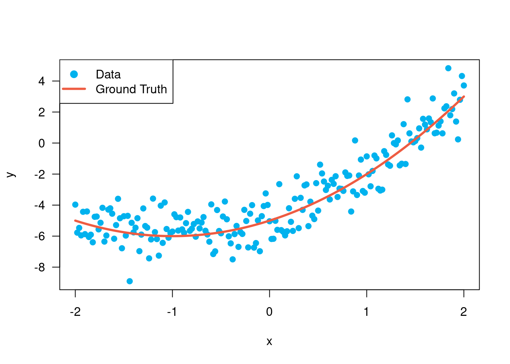
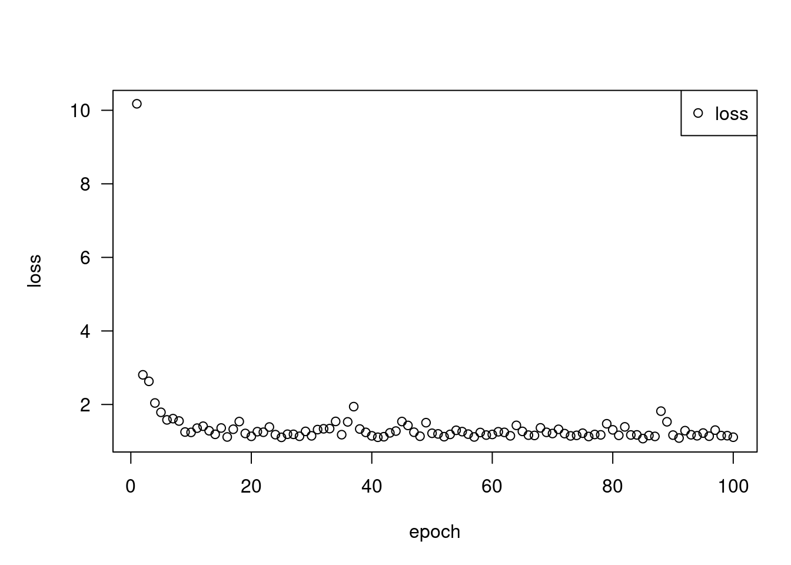

library(tensorflow)
x <- as_tensor(1:6, dtype = "float32", shape = c(2, 3))Loaded Tensorflow version 2.9.1xtf.Tensor(
[[1. 2. 3.]
[4. 5. 6.]], shape=(2, 3), dtype=float32)x$shapeTensorShape([2, 3])x$dtypetf.float32Start here for a quick overview of TensorFlow basics.
TensorFlow operates on multidimensional arrays or tensors represented as tensorflow.tensor objects. Here is a two-dimensional tensor:
library(tensorflow)
x <- as_tensor(1:6, dtype = "float32", shape = c(2, 3))Loaded Tensorflow version 2.9.1xtf.Tensor(
[[1. 2. 3.]
[4. 5. 6.]], shape=(2, 3), dtype=float32)x$shapeTensorShape([2, 3])x$dtypetf.float32The most important attributes of a tensor are its shape and dtype:
tensor$shape: tells you the size of the tensor along each of its axes.tensor$dtype: tells you the type of all the elements in the tensor.TensorFlow implements standard mathematical operations on tensors, as well as many operations specialized for machine learning.
For example:
x + xtf.Tensor(
[[ 2. 4. 6.]
[ 8. 10. 12.]], shape=(2, 3), dtype=float32)5 * xtf.Tensor(
[[ 5. 10. 15.]
[20. 25. 30.]], shape=(2, 3), dtype=float32)tf$matmul(x, t(x)) tf.Tensor(
[[14. 32.]
[32. 77.]], shape=(2, 2), dtype=float32)tf$concat(list(x, x, x), axis = 0L)tf.Tensor(
[[1. 2. 3.]
[4. 5. 6.]
[1. 2. 3.]
[4. 5. 6.]
[1. 2. 3.]
[4. 5. 6.]], shape=(6, 3), dtype=float32)tf$nn$softmax(x, axis = -1L)tf.Tensor(
[[0.09003057 0.24472848 0.6652409 ]
[0.09003057 0.24472848 0.6652409 ]], shape=(2, 3), dtype=float32)sum(x) # same as tf$reduce_sum(x)tf.Tensor(21.0, shape=(), dtype=float32)Running large calculations on CPU can be slow. When properly configured, TensorFlow can use accelerator hardware like GPUs to execute operations very quickly.
if (length(tf$config$list_physical_devices('GPU')))
message("TensorFlow **IS** using the GPU") else
message("TensorFlow **IS NOT** using the GPU")TensorFlow **IS** using the GPURefer to the Tensor guide for details.
Normal tensor objects are immutable. To store model weights (or other mutable state) in TensorFlow use a tf$Variable.
var <- tf$Variable(c(0, 0, 0))
var<tf.Variable 'Variable:0' shape=(3,) dtype=float32, numpy=array([0., 0., 0.], dtype=float32)>var$assign(c(1, 2, 3))<tf.Variable 'UnreadVariable' shape=(3,) dtype=float32, numpy=array([1., 2., 3.], dtype=float32)>var$assign_add(c(1, 1, 1))<tf.Variable 'UnreadVariable' shape=(3,) dtype=float32, numpy=array([2., 3., 4.], dtype=float32)>Refer to the Variables guide for details.
Gradient descent and related algorithms are a cornerstone of modern machine learning.
To enable this, TensorFlow implements automatic differentiation (autodiff), which uses calculus to compute gradients. Typically you’ll use this to calculate the gradient of a model’s error or loss with respect to its weights.
x <- tf$Variable(1.0)
f <- function(x)
x^2 + 2*x - 5f(x)tf.Tensor(-2.0, shape=(), dtype=float32)At x = 1.0, y = f(x) = (1^2 + 2*1 - 5) = -2.
The derivative of y is y' = f'(x) = (2*x + 2) = 4. TensorFlow can calculate this automatically:
with(tf$GradientTape() %as% tape, {
y <- f(x)
})
g_x <- tape$gradient(y, x) # g(x) = dy/dx
g_xtf.Tensor(4.0, shape=(), dtype=float32)This simplified example only takes the derivative with respect to a single scalar (x), but TensorFlow can compute the gradient with respect to any number of non-scalar tensors simultaneously.
Refer to the Autodiff guide for details.
tf_functionWhile you can use TensorFlow interactively like any R library, TensorFlow also provides tools for:
These require that you use tf_function() to separate your pure-TensorFlow code from R.
my_func <- tf_function(function(x) {
message('Tracing.')
tf$reduce_sum(x)
})The first time you run the tf_function, although it executes in R, it captures a complete, optimized graph representing the TensorFlow computations done within the function.
x <- as_tensor(1:3)
my_func(x)Tracing.tf.Tensor(6, shape=(), dtype=int32)On subsequent calls TensorFlow only executes the optimized graph, skipping any non-TensorFlow steps. Below, note that my_func doesn’t print "Tracing." since message is an R function, not a TensorFlow function.
x <- as_tensor(10:8)
my_func(x)tf.Tensor(27, shape=(), dtype=int32)A graph may not be reusable for inputs with a different signature (shape and dtype), so a new graph is generated instead:
x <- as_tensor(c(10.0, 9.1, 8.2), dtype=tf$dtypes$float32)
my_func(x)Tracing.tf.Tensor(27.3, shape=(), dtype=float32)These captured graphs provide two benefits:
tf$saved_model, to run on other systems like a server or a mobile device, no Python installation required.Refer to Intro to graphs for more details.
tf$Module is a class for managing your tf$Variable objects, and the tf_function objects that operate on them. The tf$Module class is necessary to support two significant features:
tf$train$Checkpoint. This is useful during training as it is quick to save and restore a model’s state.tf$Variable values and the tf$function graphs using tf$saved_model. This allows you to run your model independently of the Python program that created it.Here is a complete example exporting a simple tf$Module object:
library(keras) # %py_class% is exported by the keras package at this time
MyModule(tf$Module) %py_class% {
initialize <- function(self, value) {
self$weight <- tf$Variable(value)
}
multiply <- tf_function(function(self, x) {
x * self$weight
})
}mod <- MyModule(3)
mod$multiply(as_tensor(c(1, 2, 3), "float32"))tf.Tensor([3. 6. 9.], shape=(3), dtype=float32)Save the Module:
save_path <- tempfile()
tf$saved_model$save(mod, save_path)The resulting SavedModel is independent of the code that created it. You can load a SavedModel from R, Python, other language bindings, or TensorFlow Serving. You can also convert it to run with TensorFlow Lite or TensorFlow JS.
reloaded <- tf$saved_model$load(save_path)
reloaded$multiply(as_tensor(c(1, 2, 3), "float32"))tf.Tensor([3. 6. 9.], shape=(3), dtype=float32)The tf$keras$layers$Layer and tf$keras$Model classes build on tf$Module providing additional functionality and convenience methods for building, training, and saving models. Some of these are demonstrated in the next section.
Refer to Intro to modules for details.
Now put this all together to build a basic model and train it from scratch.
First, create some example data. This generates a cloud of points that loosely follows a quadratic curve:
x <- as_tensor(seq(-2, 2, length.out = 201), "float32")
f <- function(x)
x^2 + 2*x - 5
ground_truth <- f(x)
y <- ground_truth + tf$random$normal(shape(201))
x %<>% as.array()
y %<>% as.array()
ground_truth %<>% as.array()
plot(x, y, type = 'p', col = "deepskyblue2", pch = 19)
lines(x, ground_truth, col = "tomato2", lwd = 3)
legend("topleft",
col = c("deepskyblue2", "tomato2"),
lty = c(NA, 1), lwd = 3,
pch = c(19, NA),
legend = c("Data", "Ground Truth"))
Create a model:
Model(tf$keras$Model) %py_class% {
initialize <- function(units) {
super$initialize()
self$dense1 <- layer_dense(
units = units,
activation = tf$nn$relu,
kernel_initializer = tf$random$normal,
bias_initializer = tf$random$normal
)
self$dense2 <- layer_dense(units = 1)
}
call <- function(x, training = TRUE) {
x %>%
.[, tf$newaxis] %>%
self$dense1() %>%
self$dense2() %>%
.[, 1]
}
}model <- Model(64)untrained_predictions <- model(as_tensor(x))
plot(x, y, type = 'p', col = "deepskyblue2", pch = 19)
lines(x, ground_truth, col = "tomato2", lwd = 3)
lines(x, untrained_predictions, col = "forestgreen", lwd = 3)
legend("topleft",
col = c("deepskyblue2", "tomato2", "forestgreen"),
lty = c(NA, 1, 1), lwd = 3,
pch = c(19, NA),
legend = c("Data", "Ground Truth", "Untrained predictions"))
title("Before training")
Write a basic training loop:
variables <- model$variables
optimizer <- tf$optimizers$SGD(learning_rate=0.01)
for (step in seq(1000)) {
with(tf$GradientTape() %as% tape, {
prediction <- model(x)
error <- (y - prediction) ^ 2
mean_error <- mean(error)
})
gradient <- tape$gradient(mean_error, variables)
optimizer$apply_gradients(zip_lists(gradient, variables))
if (step %% 100 == 0)
message(sprintf('Mean squared error: %.3f', as.array(mean_error)))
}Mean squared error: 1.151Mean squared error: 1.107Mean squared error: 1.089Mean squared error: 1.079Mean squared error: 1.074Mean squared error: 1.071Mean squared error: 1.069Mean squared error: 1.067Mean squared error: 1.065Mean squared error: 1.064trained_predictions <- model(x)
plot(x, y, type = 'p', col = "deepskyblue2", pch = 19)
lines(x, ground_truth, col = "tomato2", lwd = 3)
lines(x, trained_predictions, col = "forestgreen", lwd = 3)
legend("topleft",
col = c("deepskyblue2", "tomato2", "forestgreen"),
lty = c(NA, 1, 1), lwd = 3,
pch = c(19, NA),
legend = c("Data", "Ground Truth", "Trained predictions"))
title("After training")
That’s working, but remember that implementations of common training utilities are available in the tf$keras module. So consider using those before writing your own. To start with, the compile and fit methods for Keras Models implement a training loop for you:
new_model <- Model(64)new_model %>% compile(
loss = tf$keras$losses$MSE,
optimizer = tf$optimizers$SGD(learning_rate = 0.01)
)
history <- new_model %>%
fit(x, y,
epochs = 100,
batch_size = 32,
verbose = 0)
model$save('./my_model')plot(history, metrics = 'loss', method = "base") 
# see ?plot.keras_training_history for more options.Refer to Basic training loops and the Keras guide for more details.
tensorflow::tf_config()TensorFlow v2.9.1 (~/.virtualenvs/r-tensorflow-site/lib/python3.9/site-packages/tensorflow)
Python v3.9 (~/.virtualenvs/r-tensorflow-site/bin/python)sessionInfo()R version 4.2.1 (2022-06-23)
Platform: x86_64-pc-linux-gnu (64-bit)
Running under: Ubuntu 20.04.4 LTS
Matrix products: default
BLAS/LAPACK: /usr/lib/x86_64-linux-gnu/libmkl_rt.so
locale:
[1] LC_CTYPE=en_US.UTF-8 LC_NUMERIC=C
[3] LC_TIME=en_US.UTF-8 LC_COLLATE=en_US.UTF-8
[5] LC_MONETARY=en_US.UTF-8 LC_MESSAGES=en_US.UTF-8
[7] LC_PAPER=en_US.UTF-8 LC_NAME=C
[9] LC_ADDRESS=C LC_TELEPHONE=C
[11] LC_MEASUREMENT=en_US.UTF-8 LC_IDENTIFICATION=C
attached base packages:
[1] stats graphics grDevices utils datasets methods base
other attached packages:
[1] keras_2.9.0.9000 tensorflow_2.9.0.9000
loaded via a namespace (and not attached):
[1] Rcpp_1.0.9 knitr_1.39 whisker_0.4
[4] magrittr_2.0.3 lattice_0.20-45 here_1.0.1
[7] R6_2.5.1 rlang_1.0.4 fastmap_1.1.0
[10] stringr_1.4.0 tools_4.2.1 grid_4.2.1
[13] xfun_0.31 png_0.1-7 cli_3.3.0
[16] htmltools_0.5.2 tfruns_1.5.0 yaml_2.3.5
[19] digest_0.6.29 rprojroot_2.0.3 tfautograph_0.3.2.9000
[22] Matrix_1.4-1 base64enc_0.1-3 htmlwidgets_1.5.4
[25] zeallot_0.1.0 evaluate_0.15 rmarkdown_2.14
[28] stringi_1.7.8 compiler_4.2.1 generics_0.1.3
[31] backports_1.4.1 reticulate_1.25-9000 jsonlite_1.8.0 system2(reticulate::py_exe(), c("-m pip freeze"), stdout = TRUE) |> writeLines()absl-py==1.1.0
asttokens==2.0.5
astunparse==1.6.3
backcall==0.2.0
beautifulsoup4==4.11.1
cachetools==5.2.0
certifi==2022.6.15
charset-normalizer==2.1.0
decorator==5.1.1
dill==0.3.5.1
etils==0.6.0
executing==0.8.3
filelock==3.7.1
flatbuffers==1.12
gast==0.4.0
gdown==4.5.1
google-auth==2.9.0
google-auth-oauthlib==0.4.6
google-pasta==0.2.0
googleapis-common-protos==1.56.4
grpcio==1.47.0
h5py==3.7.0
idna==3.3
importlib-metadata==4.12.0
importlib-resources==5.8.0
ipython==8.4.0
jedi==0.18.1
keras==2.9.0
Keras-Preprocessing==1.1.2
keras-tuner==1.1.2
kt-legacy==1.0.4
libclang==14.0.1
Markdown==3.3.7
matplotlib-inline==0.1.3
numpy==1.23.1
oauthlib==3.2.0
opt-einsum==3.3.0
packaging==21.3
pandas==1.4.3
parso==0.8.3
pexpect==4.8.0
pickleshare==0.7.5
Pillow==9.2.0
promise==2.3
prompt-toolkit==3.0.30
protobuf==3.19.4
ptyprocess==0.7.0
pure-eval==0.2.2
pyasn1==0.4.8
pyasn1-modules==0.2.8
pydot==1.4.2
Pygments==2.12.0
pyparsing==3.0.9
PySocks==1.7.1
python-dateutil==2.8.2
pytz==2022.1
PyYAML==6.0
requests==2.28.1
requests-oauthlib==1.3.1
rsa==4.8
scipy==1.8.1
six==1.16.0
soupsieve==2.3.2.post1
stack-data==0.3.0
tensorboard==2.9.1
tensorboard-data-server==0.6.1
tensorboard-plugin-wit==1.8.1
tensorflow==2.9.1
tensorflow-datasets==4.6.0
tensorflow-estimator==2.9.0
tensorflow-hub==0.12.0
tensorflow-io-gcs-filesystem==0.26.0
tensorflow-metadata==1.9.0
termcolor==1.1.0
toml==0.10.2
tqdm==4.64.0
traitlets==5.3.0
typing_extensions==4.3.0
urllib3==1.26.10
wcwidth==0.2.5
Werkzeug==2.1.2
wrapt==1.14.1
zipp==3.8.1TF Devices:
- PhysicalDevice(name='/physical_device:CPU:0', device_type='CPU')
- PhysicalDevice(name='/physical_device:GPU:0', device_type='GPU')
CPU cores: 12
Date rendered: 2022-07-14
Page render time: 26 seconds